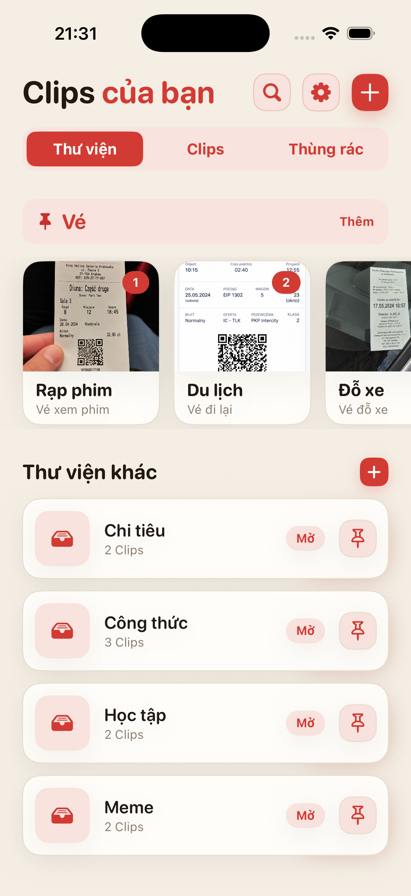
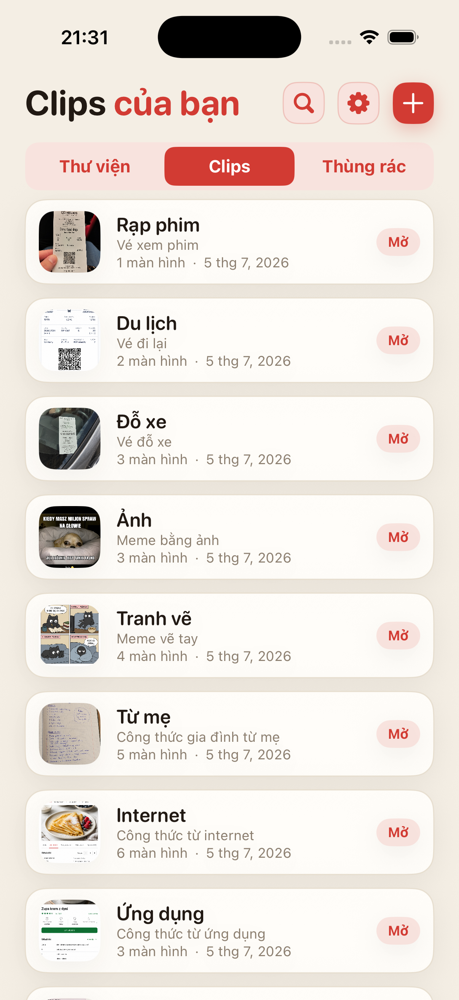
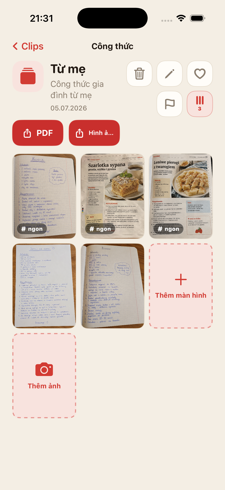
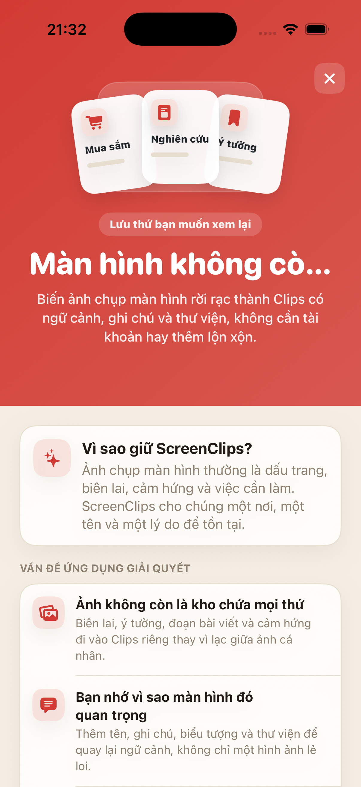

Ảnh chụp màn hình bị chìm trong đám đông
Bạn lưu một thứ quan trọng, rồi một tuần sau phải lướt cuộn ảnh như đang rà băng chứng cứ.
Biến ảnh chụp màn hình rời rạc thành Clip có tên, ghi chú và thư viện riêng. Không cần tài khoản, không đám mây, không phải đào bới mãi trong cuộn ảnh.

Hóa đơn, công thức, vé, ý tưởng và đoạn bài viết nằm lẫn với selfie, meme và ảnh trần nhà chụp nhầm. Ta có đám mây rồi, nhưng vẫn lạc mất ảnh chụp địa chỉ khách sạn.
Bạn lưu một thứ quan trọng, rồi một tuần sau phải lướt cuộn ảnh như đang rà băng chứng cứ.
Chỉ có ảnh thường là chưa đủ. ScreenClips cho bạn thêm tên và ghi chú.
Du lịch, công việc, mua sắm và học tập nên có chỗ riêng, không phải một đống kéo mãi trong Ảnh.
Tách các chủ đề như công thức, hóa đơn, vé, nghiên cứu, học tập hoặc bất cứ thứ gì bạn muốn còn tìm lại được.
Một Clip là một gói nhỏ xoay quanh một việc. Nó có tên, mô tả và ảnh chụp màn hình riêng.
Mở thư viện, chọn Clip, và mọi thứ cần thiết đã nằm cùng một chỗ.

ScreenClips không cố đoán thay bạn. Nó đưa ra một cấu trúc đơn giản: thư viện cho chủ đề, Clip cho việc cụ thể, bên trong là ảnh chụp màn hình hoặc ảnh.
Gom tài liệu vào Clip và tiếp tục thêm khi chủ đề lớn dần.
Biến Clip thành tệp dễ đọc khi bạn muốn gửi đi hoặc giữ ngoài ứng dụng.
Yêu thích, cờ đánh dấu và trật tự, thay cho cảnh cuộn mãi trong tuyệt vọng.

ScreenClips hoạt động cục bộ. Bạn không cần tài khoản để sắp xếp mọi thứ, và cũng không phải giao hóa đơn, ghi chú hay kế hoạch cho một dịch vụ khác chỉ để họ “cải thiện trải nghiệm”.
Premium không làm ứng dụng phức tạp hơn. Nó chỉ cho bạn thêm chỗ cho thư viện, Clips và ảnh chụp màn hình. Giá hiển thị trong App Store.
Tải trênApp Store
Không. Gỡ một mục khỏi Clip không xóa bản gốc trong Ảnh.
Có. ScreenClips được thiết kế như trình sắp xếp cục bộ trên iPhone của bạn.
Không. ScreenClips không cần tài khoản để sắp xếp Clips của bạn.
Có. Bạn có thể thêm ảnh chụp màn hình và ảnh khi chúng thuộc về một Clip.
ScreenClips sắp xếp những thứ bạn lưu “để lát nữa xem”. Lần này, “lát nữa” thật sự tìm lại được.
Tải trênApp Store